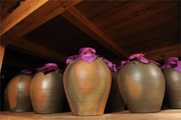
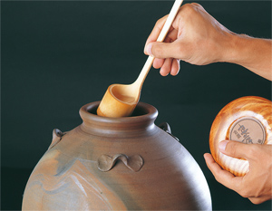

Awamori has been produced in Okinawa and said to be the origin of Japanese Shochu, distilled liquors.
Unlike other Shochu from mainland Japan, Awamori is different in that it has defferent ingredients and a different method. Therefore, It gives its own unique aroma and has a distinctive taste.
Another unique feature of Awamori is "the culture of aging Awamori called, Kusu maturation."

- 1.Using rice as an ingredient
- 2.Using black malt
- 3.Using fermentation broth of rice malt with yeast and water (whole rice malt fermentation)
- 4.Distilling liquor from rice fermentation broth by a single-distiller machine
- 5.Containing less than 45 % alcohol by volume

Awamori is called Kusu when it is aged for more than three years after the distillation.
This aging is highly unique to Awamori. The older it gets, the richer its aroma and taste become. Of all the distilled liquors in Japan, only Awamori has this culture of maturation.